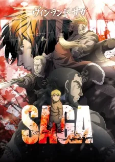
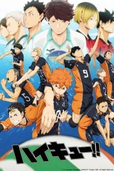
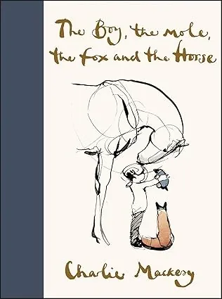
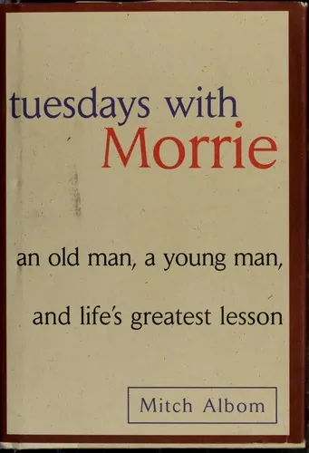
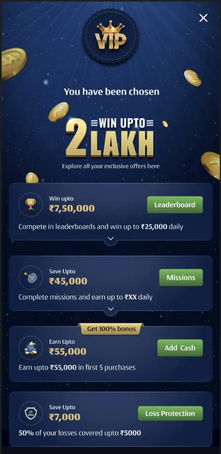
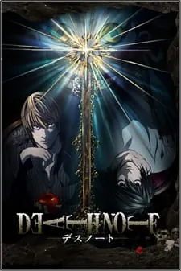
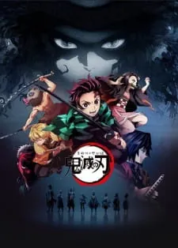
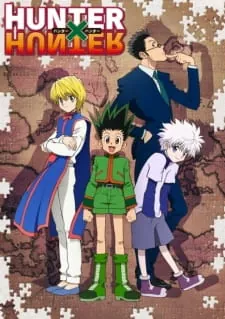
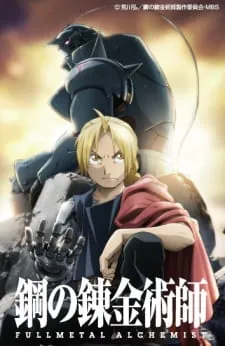
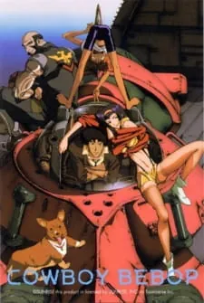

A product leader who still builds. 8+ years turning messy problems into shipped, measured wins across gaming, EdTech, and OTT — most recently an agentic AI system designed, built, and evaluated solo.
Open to Senior / Lead / Principal & AI Product roles
agentic AI system — built & evaluated solo; public on GitHub
01 / The thread
I started in engineering, moved into product, and never stopped caring about how the thing actually works. I frame problems from first principles, decompose them, and ship — then measure honestly. Lately I've been building agentic AI myself, because a PM who has shipped an agent argues about AI differently than one who has only read about it.
02 / AI & Agentic Builds
Built, evaluated, and honestly documented.
Agentic AIPublic buildIITM Pravartak · Agentic AI & Applications
AI Support Resolution Agent
A production-shaped e-commerce customer-support agent, built end-to-end across 9 incremental phases — each phase resolving a concrete limitation the previous one exposed.
Majors: IT Management & Marketing. GMAT 760/800 — top 1%.
2018–2019WORK
Technical Leader — Narayana Learning
EdTech; ~700K users; $13M+ revenue impact.
2016–2018WORK
Senior Software Engineer — FastFilmz
OTT; 100x growth, 1.5M+ downloads.
2013–2016WORK
Senior Software Developer — Tarams Technologies
IT services; $10M+ client revenue.
2009–2013EDUCATION
B.Tech ECE — IIIT Hyderabad
AIEEE AIR 2176 — top 0.002%.
05 / How I think
A repeatable loop — discover, define, experiment, scale.
How messy problems become shipped products: seven moves, always in this order. Every case study on this page is one run of this loop — tap or click any quote to open its case study at the exact line it comes from.
Discover
01
Locate the problem with data.
Find where the numbers actually break, not where opinions point. The cliff is usually narrower — and more fixable — than the complaint.
02
Ask the humans why.
Data says what; it never says why. So I get on the phone, sit in on sales calls, and watch real users struggle before deciding anything.
03
Do the secondary research — at the source.
Regulations, research papers, competitor benchmarking, vendor data — read them yourself instead of accepting the folklore version; most "constraints" are someone's old implementation of a rule, not the rule.
Define
04
Define the problem, the metric, and the guardrail — in writing.
State the problem in one line before touching solutions. Pick the metric that actually separates signal, set the guardrail, and write it down — vision doc, PRD, experiment plan.
Experiment
05
Run hypothesis-led experiments — smallest honest change first.
Every experiment traces to a diagnosed friction and a stated hypothesis — the smallest change that can prove it, A/B'd against the guardrail it must not break.
06
Measure honestly — failures included.
What fails gets killed in writing, and the budget moves. Published failures are what make the wins believable.
A win that stays a one-off is a lost lesson. Prove it once, then make it the default.
The principles underneath
P-01 Structure before speed.P-02 Removal beats addition.P-03 First principles, then data.P-04 AI is a lever, not a costume.P-05 Eval honestly, or you're guessing.P-06 Ship, then learn.
06 / Social proof
What others say.
On Aditya owning the full product loop at A23 Rummy — discovery to release
I had the pleasure of working with Aditya, who was part of my team. He consistently demonstrated a strong analytical mindset and an ability to use data to identify opportunities for improving product funnels and user journeys. His approach was always grounded in facts, and he was diligent in validating hypotheses before recommending solutions.
Beyond his analytical skills, Aditya is hardworking, dependable, and brings a calm, pragmatic approach to solving problems. He takes ownership of his work, collaborates well with cross-functional teams, and is always willing to put in the effort needed to deliver quality outcomes.
I would confidently recommend him to any team looking for someone with strong analytical capabilities, a solid work ethic, and a focus on driving meaningful product improvements.
Sankalp A Singh
Now Director of Product, Delta Exchange · Aditya's manager at Head Digital Works
On Aditya scaling growth & revenue at Interview Kickstart
Adi managed and drove the Growth initiatives during his time at IK. And it is no coincidence that his involvement was instrumental in the scaling up of IK's revenues, with a direct improvement in both organic and referral conversions. Adi started and managed both big and small initiatives with a simplicity to his process:
Being methodical in his thinking
Using data to validate his hypotheses
Presenting his story in a way that was easy to understand and buy into.
Adi's biggest hits included enabling our product to go international, enabling several interesting ways of collecting payments, enabling referral-driven revenue, increasing conversions and reducing friction across our sales funnel. He is easy to work with, driven, and has great instincts on what the key levers are to create user impact.
I would highly recommend Adi. He is, and always will be, a fantastic person to have when building and scaling your product.
Ashwin Ramachandran
Now Co-Founder, Agami AI · Aditya's manager at Interview Kickstart (Head of Eng & Product)
On Aditya driving growth & funnel gains at Interview Kickstart
Aditya has been a key product manager at IK for driving growth initiatives. He has been instrumental in creating high impact across sales and marketing — be it internationalizing our platform to support new markets or making changes in product to reduce drop-offs at different stages of the sales funnel. Aditya recently researched and incorporated a new payment provider to help bring in more sales even when the market is down. I have worked closely with him; he would be an asset to any org and someone I can highly recommend.
Soham Mehta
Founder, Interview Kickstart · worked directly with Aditya
On Aditya's UX & engineering leadership at FastFilmz
I worked with Aditya at Fastfilmz and the Narayana Group. He held the dual role of a squad leader of the user experience group and the chapter lead of the main client-facing engineering teams. As a squad leader, Aditya took decisions regarding user experience and product design, understanding the key factors that determine the usability of the product. His role as a chapter lead saw him handling the human side of the organization, ensuring programmers have no distractions and are able to focus on core engineering. I hereby highly recommend Aditya for product roles that lie at the intersection of business and engineering.
Saif Naik
Now Software Engineering Manager, Google · ex-CTO, FastFilmz
07 / Beyond Work
The human dimension.
Curiosity, world-building, systems, narrative — the things I read and watch shape how I frame problems.
Anime I recommend
Naruto Shippuden2007
Naruto Shippuden
hard work, loyalty, and sacrifice; honour earned, not inherited.
Vinland Saga2019

Vinland Saga
a patient arc from revenge to purpose; what you build outlasts what you conquer.
Haikyu!!2014

Haikyu!!
the joy of marginal gains and a team greater than the sum of its players.
Books I recommend
B-01
MistbornBrandon Sanderson
Mistborn
2006 · Epic fantasy
the most satisfying magic system I've ever read, wrapped in a proper page-turner.
B-02
The Boy, the Mole, the Fox and the HorseCharlie Mackesy

The Boy, the Mole, the Fox and the Horse
2019 · Illustrated
kindness, courage, and asking for help, in a few honest lines.
B-03
Tuesdays with MorrieMitch Albom

Tuesdays with Morrie
1997 · Memoir
a dying mentor on what actually matters; perspective over hustle.
Family
Married to Anjana, a paediatric surgeon, and dad to Aarush (born 2025) — one of them heals kids for a living; the other is busy being one.
Giving back — Bhumi NGO · Kanini Project · 2017–19
City-level ops coordinator across 6 centers, 122 children/year. Taught 30 students weekly for a year — 85% scored 75%+ in the NIIT exam.
08 / Contact
Let's talk.
Open to Senior / Lead / Principal & AI Product roles
The cheapest deposit is the one the player already made
India's GST on real-money gaming jumped to 28% of every deposit, and A23 absorbed it rather than pass it to players — roughly ₹44 of every ₹100 the platform actually earned was going out as tax. My answer: when a player runs out of money mid-session, give them one tap to reclaim cash they'd already asked to withdraw — instead of pushing a fresh, freshly-taxed deposit.
My role
Self-initiated: while hunting for ways to get more games out of every active player, I zeroed in on the insufficient-balance moment as the biggest leak in that loop — and connected it to the pending-withdrawal queue, with the company's GST pressure sharpening the case for intervening exactly there. I wrote the PRD and shaped the pop-up with the design team.
The shipped pop-up. When a pending redeem exists, the contextual "Recommended · Cancel Redeem" container is surfaced above the legacy Add-Cash link — with the exact reclaimable amount printed live.
The problem: the high cost of convenience
The problem, defined: at peak intent — game just lost, wallet empty — getting back to the table meant a multi-step exit through an external payment gateway; and every fresh deposit triggered a new 28% tax while the player's own, already-taxed money sat frozen in the withdrawal queue.
Running out of funds mid-session was a primary drop-off point. The legacy "Insufficient Balance" pop-up ripped players out of their game into an external "Add Cash" gateway and dropped them back in the lobby. Worse, 17% of players hitting an empty balance already had a pending withdrawal — a "redeem" — money that could have kept them playing.
[Legacy] Result ➔ Insufficient Balance ➔ Exit ➔ External Gateway ➔ Lobby (friction + fresh 28% tax)
[New] Result ➔ Insufficient Balance ➔ 1-Click Cancel Redeem ➔ Replay (zero friction + no new tax)
The tax math, in one minute
The platform's real revenue is rake — a small commission on each game; deposits are the player's own money moving through the system. GST, though, was now charged at 28% of every deposit, and a deposit is far larger than the rake it eventually produces — so measured against actual revenue, the absorbed tax worked out to ~44% of rake. A cancelled withdrawal, by contrast, puts money back on the table that was already taxed once — no new GST event. Same games either way; the swap just deletes the marginal tax. That asymmetry is the whole business case.
The behavioral hypothesis: interception at peak intent
At the millisecond a game ends, a player's core motivation is rapid continuation — they care about the velocity of funds, not the source. Older reversal paths (a passive Add-Cash banner at ~539/day; manual profile lookups at ~4,500/day) missed this window. If we surfaced their own frozen withdrawal capital right on the failure screen, we could beat a payment gateway and bypass a taxable deposit entirely.
The solution: contextual capital swaps
The pop-up now queries account state in real time. If an open withdrawal exists, it renders a prominent "Recommended" container — e.g. "Add ₹2,800 by cancelling your pending redeem(s)" — with a one-tap "Cancel Redeem". The backend reverses the funds to the active wallet instantly, with no external latency, OTP, or gateway drop-off.
Impact: the interception moved the volume
The contextual pop-up became the primary internal-liquidity mechanism, intercepting higher-intent users at the peak moment and pulling volume forward from the lower-intent legacy paths:
Redeem-cancellation path
Before
After
End-of-game IB pop-up (new)
—
1,318 / day
Add-Cash screen nudge
539 / day
329 / day
Manual profile lookup
4,500 / day
3,705 / day
Net, the pop-up added ~₹7.8 L/day of cancelled redeems — ~2.5% of the standard requested amount — returned as tax-neutral capital to circulating gameplay, and cut overall GST pressure by 0.7 pt (~₹1.7 L/day · ~₹6.2 Cr annualized) straight to the bottom line, with no hit to retention.
Attribution, checked: before claiming the lift, we verified with CRM that no concurrent campaign (lifecycle, game-win offers, playpass) overlapped the window — the increment is fairly attributable to the pop-up.
The guardrails: games per player — the swap must not shrink play volume versus a larger deposit — plus retention (held) and withdrawal trust: cancellations stayed strictly player-initiated, monitored through CS complaints.
What I took away
Growth questions usually get growth answers — more offers, more deposit pushes. Reframing it as a systems question — where does money already inside the system get stuck? — found a move that was better for the player, the session, and the P&L at once. The other lesson is placement: the reclaim option had existed for years on calmer screens; surfacing it at the moment of maximum intent is what unlocked the volume. Intent is a when, not just a who.
Behavioral insightExperimentationRetention
Breaking the losing streaks that kill new players
60% of newly-converted players churned within their first week — and the data traced it to early, consecutive losing streaks. I redesigned who a struggling new player gets matched with — never touching the cards, the odds, or the money — so a bad first day stopped becoming a permanent goodbye.
My role
Discovery to rollout, this was mine. I wrote the SQL that traced 40% of new-player churn to the first 20 games; churned-player calls pointed to consecutive early losses breaking trust, and I validated that pattern in Mixpanel and CleverTap before writing any strategy. I authored the EOMM Vision Document (Engagement-Optimized Matchmaking — matching designed around keeping players engaged, not just filling tables fast) and the "Increasing D7 retention through matchmaking" PRD framed on the WWW'17 research paper, designed the experiments, made the rollout calls — including removing the 50/50 split — and led the RCA when 6-player wait-times regressed.
daily rake (our per-game commission) per player in early lifecycle, with spends flat
77.7%
next-game join rate inside the loser-only queue vs ~36% on the default queue
40%
of all new-user churn concentrated in a player's first 20 games
The random-matching churn trap
The problem, defined: random matching was blind to a new player's engagement state — consecutive early losses, not lack of skill, were turning new players into churn.
To maximize matching speed, the legacy first-in-first-out (FIFO) queue — pair whoever has waited longest, fastest match wins — put newly-converted casual players randomly against top-tier veterans. The data exposed a sharp retention cliff at the onboarding gateway — of 89,888 users churned from a single monthly cohort, ~40% churned inside their first 20 games. And the driver was winning, not skill: game-to-game retention rose steeply with a player's very first win.
After 2 games, players who had…
Next-game retention
0 wins
94.8%
1 win
99.0%
2 wins
99.7%
Calls with D7-churned players confirmed it wasn't a skill gap: even experienced players arriving from other rummy platforms described the same spiral — an early losing streak read as "the system is fixed", and they left.
If an early win is what buys retention, the highest-leverage move is to give vulnerable new players a fair shot at one — without ever touching the RNG or the cards.
The strategy: Loser-Only Tables (LOT)
A simple, automated behavioral loop: if a user loses, adjust their matching context; if they win, return them to baseline. When a targeted player lost, we briefly held their request to pair them with other players coming off a loss — a fair, skill-neutral chance to self-correct. A single win returned them to the standard pool.
[Legacy] New player (loss streak) ➔ paired randomly ➔ perception churn (60% D7 churn)
[EOMM] New player (loss) ➔ loser-only queue ➔ dynamic clustering ➔ safe re-engagement
We chose loser-only tables over the alternative — win%-bracket matching — on purpose: the capability already existed, its liquidity risk was lower, and it was future-ready for a win%-based rule layered on top. That trade-off was documented, not assumed.
New players, first 50 games. Win% jumped +6 pp and D4–D7 retention lifted ~1 pp — but average games didn't move: splitting the base into target/control choked matching liquidity, inflating waits from 7s to 10s+.
Scale · Remove the split
100% of the conversion base Jan 2025
Once the thesis held, I raised the ticket to remove sampling and shipped to everyone. With full organic liquidity, D4–D7 retention reached 45.4% (~+3.7 pp vs control), win% normalized to ~45%, and users playing 5+ cash games in week one rose to 64.9%.
Broaden · More bets & formats
2P + 6P bets, 0.05–0.5 Mar–Apr 2025 · 70/30, first 100 games
~83% of the target group experienced a loser-only match; win% lifted ~3 pp and D0–3 rake/player rose +4% with spends flat. When 6-player wait-times regressed, I led the RCA — the cause was a separate LeaveTable config change, not LOT; reverting it recovered the KPIs.
Phase 2 · Recovery matchmaking
Win-to-Wager clustering designed; halted by regulation
The next engine clustered players by financial recovery, not raw win% — insulating those in severe negative variance before national regulatory changes halted operations.
The guardrails: queue wait-time (the 7s→10s regression is what forced removing the 50/50 split), games per player, and spends — flat while rake rose 4%; win% normalizing to ~45% confirmed the system wasn't overshooting.
Why recovery %, not win %
Raw win% understates damage: skilled players fold weak hands early (high drop%), which deflates win% while protecting their wallet. So we scored Win-to-Wager (Recovery %) over a rolling 3-day window. The relationship with churn was stark — players recovering under 34% of what they wagered churned at 43% by D7, nearly 6× the healthy mid-deciles:
<34%43%
34–52%19%
52–60%13%
60–66%9%
66–74%7%
74–88%5%
88%+14%
D7 churn by win-to-wager (recovery) decile. Recovery cleanly separates churn risk across the middle of the base — where raw win% is noisiest — which is why it became the metric for the next matchmaking engine. (The top decile ticks back up: high-variance winners who cash out and leave.)
What I took away
In a marketplace, the test itself can be the confounder — our 50/50 split halved matching liquidity and nearly buried a real win. The calls taught me what churn really was: trust — losing streaks read as "rigged". The data taught me its measure: recovery%, not win%, is where at-risk players actually show up.
DiscoveryML/DataExperimentation
Finding tomorrow's VIPs on day one — and keeping them
About 3 in 100 new players go on to drive most of a rummy platform's revenue — and we were losing them early. Growing the number who reach early-VIP status was a company bet for 2024–25, and the journey there runs acquisition → KYC → first add-cash → the new-player journey to day 30. I defined and owned that last stage — the D30 journey, where the strategy's outcome was won or lost — with peer PMs driving the earlier stages, and Analytics, Design and Marketing as partners throughout.
+70
more high-value players from every monthly cohort — a ~30% step-up in the platform's most valuable inflow
+14%
net revenue (NGR) over players' first 30 days
+25%
revenue (rake) per player in the high-stakes segment
+2 pt
30-day retention across all new players
The problem
The problem, defined: early VIPs are where the platform's future revenue comes from — the top 20% of new players by day-0–3 rake go on to produce 86% of all VIPs over the next 12 months. These players reveal themselves within days of joining — and fewer and fewer of them were showing up. The job was two-fold: grow D30 high-value players, and lift the broad new-player base feeding them.
THE FUNNEL ───────────────────────
Acquisition → KYC → First add-cash
│
▼
┌───────────────────────────────┐
│ New-player journey → day 30 │
│ my scope — this case study │
└───────────────────────────────┘
early '23904
late '23360
'24232
New players showing VIP behaviour within 3 days of joining — down ~75% across successive periods. This early signal is the leading indicator of the D30 VIP pipeline — and the pipeline was drying up.
What we found before building anything
The quantitative diagnosis found three frictions:
The number and size of purchases in a player's first 30 days directly correlates with their retention — with a cliff around the 4th–5th top-up: the first four land quickly, then velocity crashes.
Mid-cycle decay — retention of predicted VIPs falls from 58% in week two to 47% by day 30.
A bet-mix clue — these players live on medium and high-stakes tables, where the only engagement tool was a fatigue-inducing 24-hour daily leaderboard.
Data says what, not why — so I set up a calling program with our CS team: every identified high-potential player called within a day of detection, on a fixed script. Across 329 conversations, the externally-identified cohort turned out to be full of competitor switchers with concrete, addressable defection reasons — and one finding no dashboard would ever have surfaced:
unaware55%
unclear42%
aware3%
"Do you know about our offers and benefits?" — our most valuable new players, one day after we identified them. We were finding the right players, then staying silent.
These results landed mid-way through the build — and we acted on them right away: I took the findings to the marketing team, formed a joint GTM plan, and we finalised an in-app banner surfacing the offers to identified players. The fuller product answer came later, as its own roadmap item (below).
The approach: spot them on day one, then remove what stops them
You can't help a player you can't see. Our in-house model (built by Analytics) reads three days of gameplay before it can flag anyone — but most quitting happens in those first three days. So I brought in outside payment data that works the moment a first deposit lands: a 10,000-user trial proved the match was real — a 65.75% hit rate — and, since the vendor charged per signal, we screened all 24 with the Analytics team for precision and recall and kept only the 4 that mattered, cutting the per-user cost ~6×. Either flag puts a player into one shared pool. The bonuses ran on that pool; the leaderboards went wider — every new player, tiered by stakes — so the premium fix and the broad-base fix shipped as one system.
SPOT THEM ────────────────────────
[ New player joins ]
│
┌─────────┴─────────┐
▼ ▼
Payment signals Behaviour model
· day 1 · day 3
└─────────┬─────────┘
▼
Pool of likely high-value players
HELP THEM STAY ──────────────────
│
┌─────────┴─────────┐
▼ ▼
Bonus at the 2-hour-reset
5th top-up leaderboards
(VIP pool) (all players)
└─────────┬─────────┘
▼
+70 high-value players / cohort
Why two-hour leaderboards?
Both retention problems shared a culprit: the 24-hour leaderboard. Engagement is what drives retention — and a daily board suppresses it: anyone who joins late faces totals at the top that look unassailable, their chances of winning collapse, and they simply stop competing (the leaderboard discouragement effect). Drawing on Yu-kai Chou's Actionable Gamification (Core Drive 2: Development & Accomplishment), we compressed the cycle to two hours — 12 fresh starts a day. A wipe-out stops being terminal, "urgent optimism" replaces resignation, and table re-joins compound. The same mechanic on entry-stakes tables for every new player is what lifted the platform's 30-day retention baseline by ~2 points.
Why a locked bonus?
The milestone bonuses were a 100% match — top up ₹100, get ₹100 — but locked, releasing gradually as the player wagers. Once granted, the bonus already feels like the player's own money (the endowment effect — Yu-kai Chou's Ownership & Possession drive, sharpened by loss aversion), so leaving it locked feels like losing it. Players wagered to release it, topped up to keep wagering, and earned the next milestone bonus along the way — a self-reinforcing purchase → play → unlock → purchase loop.
What the experiments showed
Every experiment mapped to a diagnosed friction — none were intuition bets — and each ran as an A/B test with NGR (net gaming revenue, after bonus costs) as the guardrail:
Experiment
What happened
Bonus at the 5th top-up · identified VIP pool
+20 high-value players · +21% net revenue
2-hour leaderboards, week one · low-stakes tables
+5 high-value players · +2.5% 30-day retention
2-hour leaderboards, week one · medium/high stakes
Gains measured inside each experiment's test group, on different cohorts and time windows — so the rows don't add up to one number. The low-stakes rows are the broad-base track: they're what compound into the ~2-pt lift in the platform's 30-day retention baseline.
The guardrail: NGR after bonus costs — in the D8–D30 leaderboard test it dipped until D15, then swung strongly positive by D31–45. Ops guardrail: low-liquidity instances were patched with longer-duration leaderboards queued for low-liquidity windows.
The winners closed with written summaries and product + marketing sign-off, then rolled out to every new player. The sustained net effect: ~70 extra high-value players from every monthly cohort, at no extra acquisition spend.
Closing the loop: benefits players can actually see
The GTM banner was the quick fix for the awareness gap; the durable answer, shaped with our design team, was an Early-VIP page, surfaced the moment a player is identified — every benefit bundled on one screen, personalized to how they were identified and where they are in their first month: "win upto" leaderboard tiles, milestone purchase bonuses, missions, and loss protection (50% of early losses covered).

The proposed design: identification triggers a personalized "You have been chosen" page — the answer to 55% of our best players not knowing their benefits existed.
Queued behind it: purchase bonuses extended to day 30, missions for weeks two and three, and PayU scoring at registration. Operations were halted by regulation — not by results.
What I took away
Discovery isn't a phase: the calling program's biggest insight arrived mid-flight — after the identification system was already live — and became its own roadmap item. Publishing the experiment that failed, and reallocating its budget, is what made the wins credible to finance. And the build-and-buy lesson: pay for external data exactly where your own data is blind (day one); build where your behavioural signal is rich.
FunnelGrowthDiscovery
One signature instead of fifteen
At Interview Kickstart (EdTech, US market), enrollments were dying at the very end of the funnel — after marketing had already paid for the lead and the webinar had already convinced them. I owned the sales-funnel product.
+43%
completion on the critical enrollment step
+20%
sales — same leads, same price, only the friction changed
The funnel, and where it died
Webinar → Email CTA → Enrollment page:
[1] Choose course
[2] Sign the agreement ←— the cliff
[3] Choose payment plan
[4] Pay
The problem, defined: our highest-intent users — already convinced, card in hand — were abandoning at a formality: 10–15 signature boxes for one legal requirement.
Step 2 was a US-government-mandated enrollment agreement covering every module in the course — and a course had 10–15 modules, each with its own "Sign here". A user who had just decided to spend thousands of dollars was asked to click-sign the same document over a dozen times before we would take their money.
The data said where — the sales calls said why
Funnel analytics localized the drop-off precisely to the agreement step. But numbers couldn't explain it, so I sat in on live sales calls and watched enrollments happen: users got overwhelmed by the wall of signature boxes, grew frustrated halfway through, and closed the tab. Our highest-intent users, lost to a formality.
Read the regulation myself
The easy assumption — "it's a government requirement, nothing we can do" — is where this usually ends. Instead I worked through the actual mandate with Legal. The requirement: a signature for each module being purchased. Nowhere did it require each one to be signed by hand. The friction wasn't the law — it was our implementation of it.
The fix: sign once, apply everywhere
We replaced 10–15 manual signature boxes with a single CTA: the user e-signs once, and the signature is applied to every required location and stored in the database as signed at each place — the per-module requirement fully satisfied, at one-fifteenth the effort. Compliance preserved, friction deleted: +43% step completion, +20% sales.
What I took away
Watch users, not just funnels — the dashboard found the leak, live calls explained it. And most "regulatory constraints" are implementations wearing a law's clothing: the highest-ROI move in this project was reading the requirement instead of accepting the folklore version of it.
0→1PlatformConversion
One-click login for the living room
On a TV, every character is a D-pad hunt across an on-screen keyboard — so most viewers simply never logged in. I owned Voot's smart-TV and connected-device journeys, and shipped a 0→1 one-click login for Fire TV, then scaled it across Android TV.
+43%
logged-in users on Fire TV
+50%
logged-in users on Android TV
~50%
lift in subscriptions
~30%
lift in video views
The problem: the keyboard is the enemy
The problem, defined: everything that monetizes an OTT platform sits behind login, but on a TV every character is a D-pad hunt — so most viewers never logged in, and the business lost them at their moment of highest intent.
Subscriptions, personalization, watch history, cross-device resume — all of it gated behind a form that takes dozens of remote-presses per field to fill. Users simply abandoned at the login wall.
What shipped
A one-click login that uses the account the viewer is already signed into on the device — the Amazon account on a Fire TV stick, the Google account on an Android TV. No typing, no second screen, one press of the remote. Fire TV shipped first as the 0→1 proof, then the pattern scaled to Android TV. Paired with it: one-click payment via Amazon In-App Purchase, so the subscription moment inherited the same zero-friction path — +32% subscribers and $182K in recurring revenue from that companion flow.
What I took away
On constrained platforms, the winning product move is usually removal — the device already knew who the user was; the product just had to stop asking. Identify the platform-shaped friction, then delete it.
The three on the card are my favourites — here's the fuller list of shows I've watched and genuinely enjoyed. I keep adding to it.
Naruto Shippuden2007
Naruto Shippuden · 2007
Vinland Saga2019
Vinland Saga · 2019
Haikyu!!2014
Haikyu!! · 2014
Death Note2006

Death Note · 2006
Demon Slayer2019

Demon Slayer · 2019
Hunter × Hunter2011

Hunter × Hunter · 2011
Steins;Gate2011
Steins;Gate · 2011
Rurouni Kenshin: Trust & Betrayal1999
Rurouni Kenshin: Trust & Betrayal · 1999
Berserk1997
Berserk · 1997
Fullmetal Alchemist2009

Fullmetal Alchemist · 2009
Cowboy Bebop1998

Cowboy Bebop · 1998
Black Lagoon2006
Black Lagoon · 2006
Psycho-Pass2012
Psycho-Pass · 2012
Dragon Ball Z & Super1989
Dragon Ball Z & Super · 1989
Code Geass2006
Code Geass · 2006
Kuroko's Basketball2012
Kuroko's Basketball · 2012
Samurai Champloo2004
Samurai Champloo · 2004
The three on the card are my favourites — here's the fuller list of books I've read and genuinely enjoyed. I keep adding to it.
Favourites
B-01
MistbornBrandon Sanderson
Mistborn
Brandon Sanderson
the most satisfying magic system I've ever read.
B-02
The Boy, the Mole, the Fox and the HorseCharlie Mackesy
The Boy, the Mole, the Fox and the Horse
Charlie Mackesy
kindness, courage, and asking for help.
B-03
Tuesdays with MorrieMitch Albom
Tuesdays with Morrie
Mitch Albom
a dying mentor on what actually matters.
Fantasy
B-04
The Stormlight ArchiveBrandon Sanderson
The Stormlight Archive
Brandon Sanderson
epic fantasy at full scale; journey before destination.
B-05
WarbreakerBrandon Sanderson
Warbreaker
Brandon Sanderson
colour-fuelled magic and the best sarcastic sword in fantasy.
B-06
The Lord of the RingsJ.R.R. Tolkien
The Lord of the Rings
J.R.R. Tolkien
the blueprint every fantasy world since is measured against.
B-07
Harry PotterJ.K. Rowling
Harry Potter
J.K. Rowling
still the easiest world to disappear into.
Self-help
B-08
The Midnight LibraryMatt Haig
The Midnight Library
Matt Haig
a kinder way to think about regret and the lives you didn’t live.
B-09
Before the Coffee Gets ColdToshikazu Kawaguchi
Before the Coffee Gets Cold
Toshikazu Kawaguchi
what you’d say if you could go back, knowing nothing would change.
B-10
Bhagavad Gita—
Bhagavad Gita
—
underrated; teaches a lot. Not for everyone.
Fiction
B-11
The Song of AchillesMadeline Miller
The Song of Achilles
Madeline Miller
the Iliad retold as a love story; quietly devastating.
B-12
This Is How You Lose the Time WarEl-Mohtar & Gladstone
This Is How You Lose the Time War
El-Mohtar & Gladstone
love letters across a war through time; prose like poetry.
B-13
The Time MachineH.G. Wells
The Time Machine
H.G. Wells
the original time-travel story, still unsettling.
B-14
Great ExpectationsCharles Dickens
Great Expectations
Charles Dickens
on growing up, and what money does to it.
B-15
The AlchemistPaulo Coelho
The Alchemist
Paulo Coelho
a fable about following your own path; half self-help, and that’s fine.